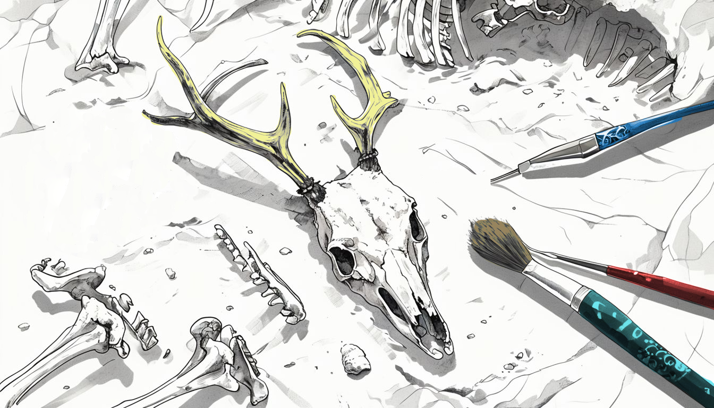
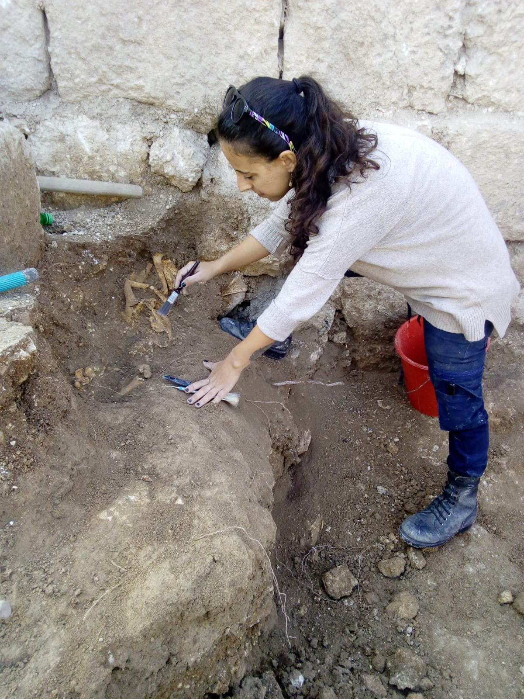
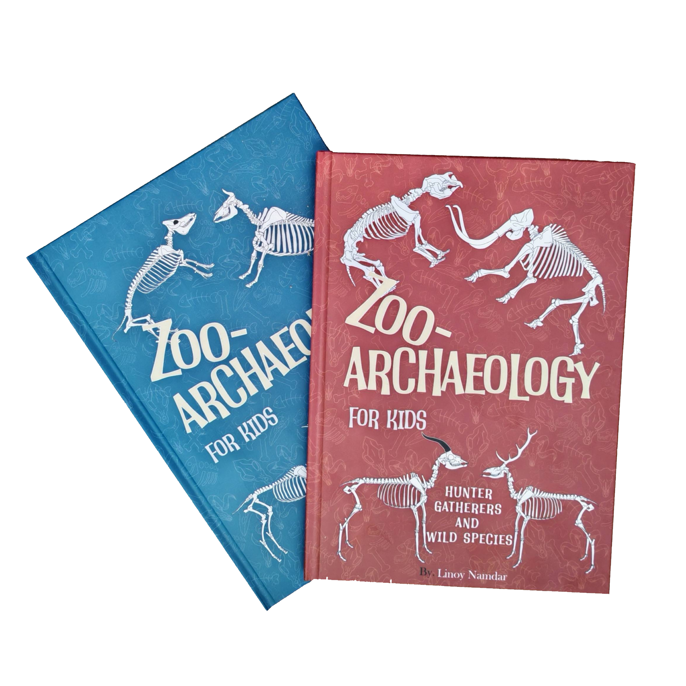
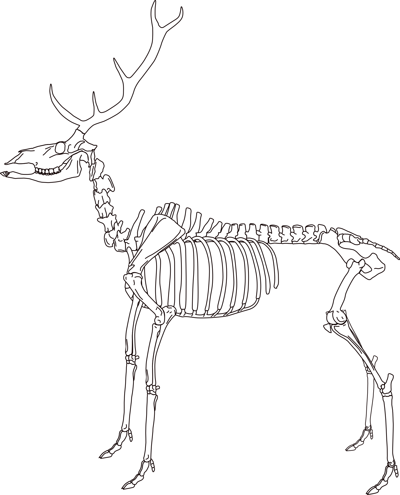
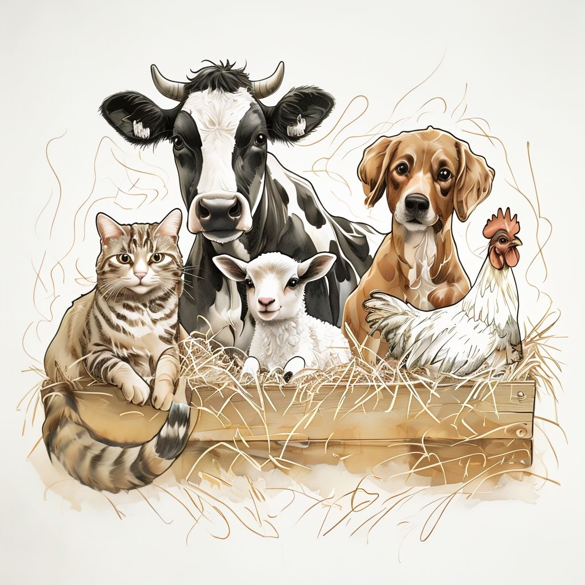
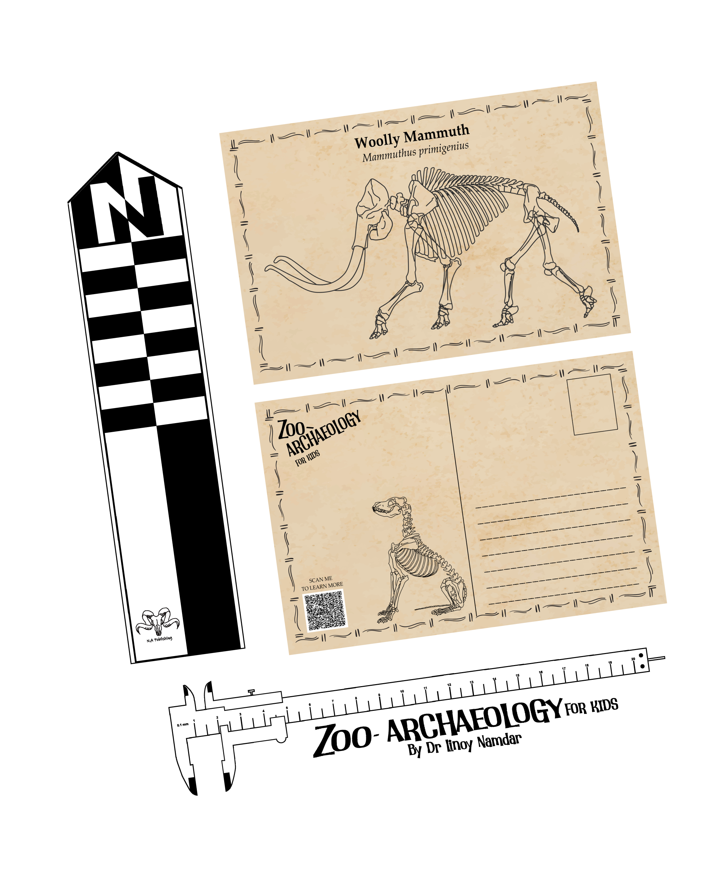
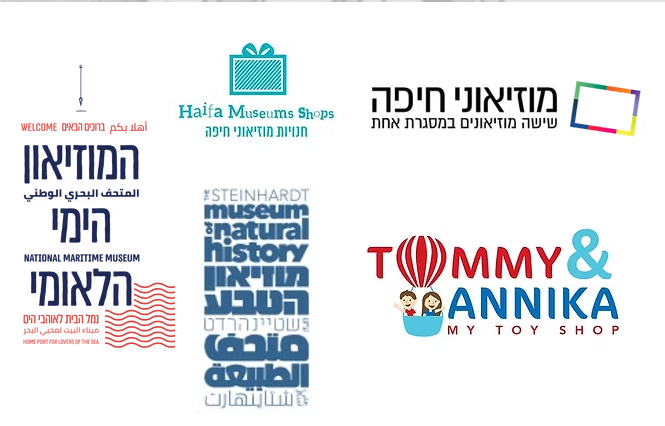

A Book Series by Dr. Linoy Namdar
About the Author
I'm Dr. Linoy Namdar, an archaeologist specializing in Zooarchaeology, exploring the fascinating bond between humans and animals in the ancient world.
I am a research fellow in the Eötvös Loránd University (ELTE), Hungary under the Momentum MSCA Postdoctoral Fellowship. My research focus on the animals' role as products in shaping long-distance interactions between Copper Age communities in the Carpathian Basin.
In 2024, I embarked on a new adventure, writing and designing a children's book series called ZooArchaeology for Kids. These educational books are my way of sharing the captivating stories of human and animals connections throughout archaeological history with young (and young-at-heart!) readers. The books are sold here on this website, and in selected museum shops. For any questions, you are welcome to send me a message via the Contact section.
Come explore the fascinating tales hidden within the bones!

The books uniquely introduces children to zooarchaeology, a specialized field that studies ancient animals and humans through the bones we found in the excavations.

Written and designed by the Zooarchaeologist Dr. Linoy Namdar. The books benefits from her deep knowledge and passion for the subject. Her expertise ensures the content is accurate, educational, and presented in an age-appropriate manner.

The books delves into pivotal periods: Book 1: Hunter-gatherers and Wild Species explores prehistoric times. Book 2: The Neolithic Revolution uncovers the significant transition to farming and animal domestication.

Learn about the skeletal elements and the differences between carnivores, herbivores, omnivores. Including anatomical atlas and activity pages.

The books' illustrations depict both complete skeletons and living animals. This allows children to easily connect ancient remains with the creatures they once were, making complex topics accessible and exciting.

Receive a unique archaeological bookmark and a beautiful postcard, both designed by Dr. Namdar.

"I ordered these nice books as a present and it arrived fast and was well received. Recommended!"
— Alex"The books are beautifully illustrated and informative for children's and adults as one. The perfect gift for any archeology enthusiast. Quick delivery, very recommended."
— Sapir"I got these books for my son, even though he's a bit young for them, I know he will LOVE them when he's a bit older. They're very informative but also cute and fun, perfect for kids who want to learn more about animals and their history!"
— Atar"These books are an amazing gift. I ordered it for my granddaughter, who loves archaeology. I had to buy another copy for my friend's grandsons, and they enjoy it a lot."
— NadegdaZooArchaeology for Kids is a children's book series that introduces young readers ages 6–16 to zooarchaeology — the study of ancient humans and animals through the bones found in archaeological excavations.
The books are designed for curious children ages 6–16, with vivid illustrations, anatomical atlases, and activity pages that make real science accessible and fun.
Book I: Hunter-Gatherers and Wild Species explores prehistoric times and Ice Age animals. Book II: The Neolithic Revolution uncovers the transition to farming and animal domestication.
The books were written and designed by Dr. Linoy Namdar, a real zooarchaeologist and research fellow at Eötvös Loránd University (ELTE), Hungary.
You can order directly by email at na.zooarch@gmail.com using the "Contact me" button on this page. The books are also available in selected museum shops.